Monday, Apr 11
You can also download a PDF copy of this lecture.
Probability Density, Survival, and Hazard Functions
Let \(T\) be a continuous random variable that is time-till-event. Four related functions are used to describe the distribution of \(T\).
The Probability Density Function
The probability density function of \(T\) is \[ f(t) = \lim_{\delta t \rightarrow 0} \frac{P(t \le T < t + \delta t)}{\delta t}. \] If \(\delta\) is relatively small then \(P(t \le T < t + \delta t) \approx f(t)\delta t\) and so \(f(t) \approx P(t \le T < t + \delta t)/(\delta t)\) and thus \(f(t)\) is approximately proportional to the probability that \(T\) is between \(t\) and \(t + \delta t\). So \(f(t)\) is approximately proportional to the probability that the event will happen “near” \(t\).
For the distribution below, the probability that \(T\) is approximately 40 (say, between 39 and 41) equals the area under the curve and between 39 and 41. This probability is approximated by the rectangle, which has area \(wf(40)\), where \(w\) = 2 is the width of the rectangle and \(f(40)\) is the height of the rectangle. So the probability that \(T\) is approximately 40 is proportional to \(f(40)\).
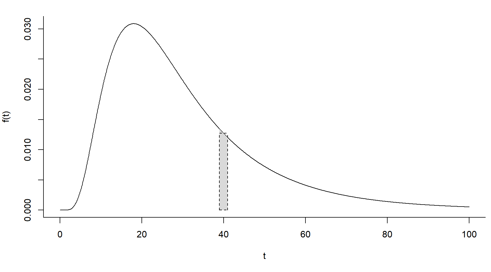
The Survival Function
The survival function is \[ S(t) = P(T \ge t). \] It equals the area under \(f(t)\) and between \(t\) and \(\infty\). The area under \(S(t)\) equals \(E(T)\) if \(S(0) = 1\) and \(S(\infty) = 1\).
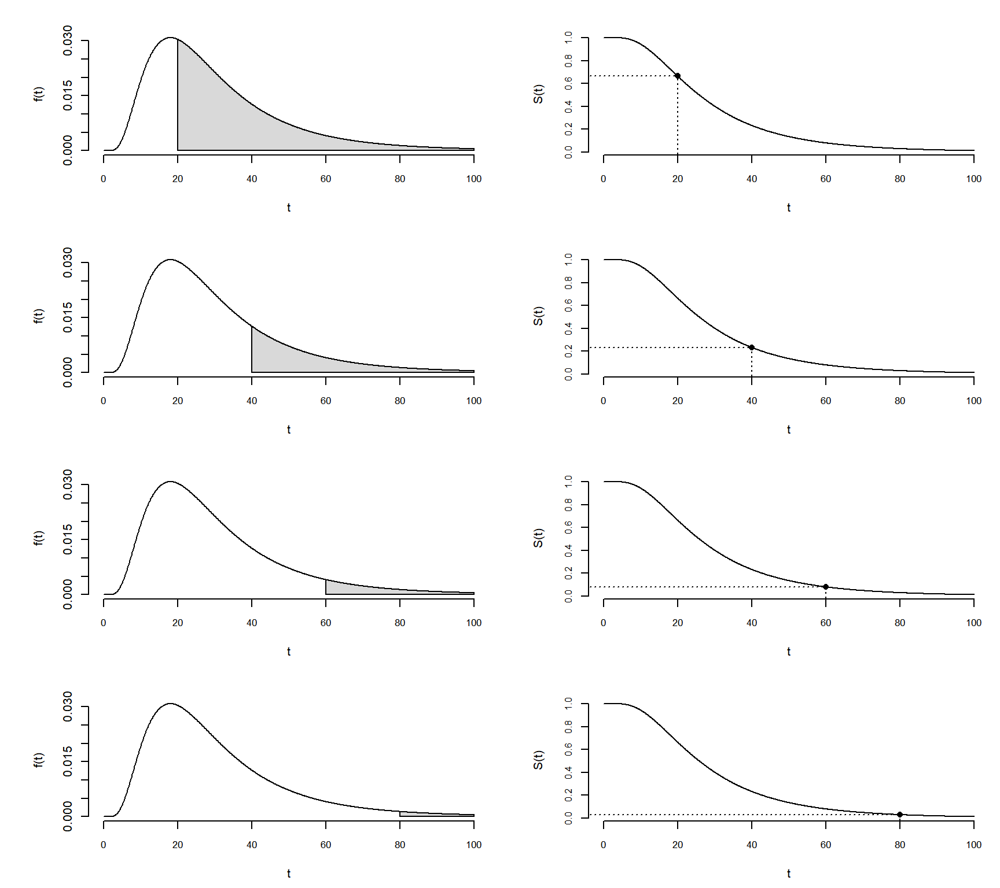 Thus \[ S(t) = \int_t^{\infty} \!\!\! f(z)dz. \]
The Hazard Function
The hazard function is \[ h(t) = \lim_{\delta t \rightarrow 0} \frac{P(t \le T < t + \delta t|T \ge t)}{\delta t} = \frac{f(t)}{S(t)}. \] If \(\delta\) is relatively small then \(h(t)\) is approximately proportional to the probability that \(t \le T < t + \delta t\) given survival up to \(t\) — i.e., \(T \ge t\). So \(h(t)\) is approximately proportional to the probability of the event happening at near time \(t\) if it has not yet happened.
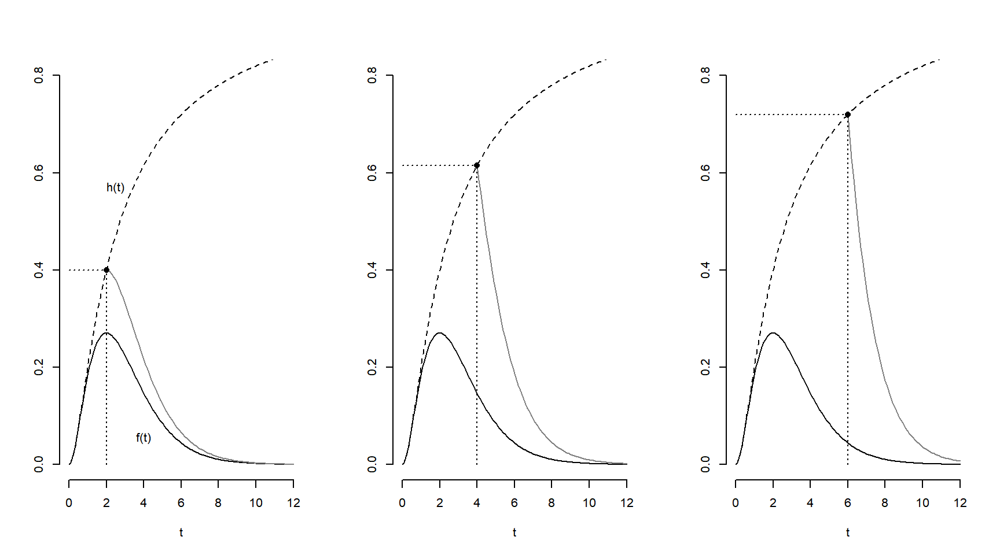
Distributions and Hazard Functions
A wide variety of distributions can be used for parametric survival models such as AFT models. Below is a list of just some of those distributions. One of the more noticeable differences between them is the shape of their hazard functions.
Log-normal. The distribution of \(\log(T_i)\) is normal. Single-peaked hazard function. Known as
lognormalbysurvregandflexsurvreg, and alsolnormbyflexsurvreg.Log-logistic. The distribution of \(\log(T_i)\) is logistic. Single-peaked or decreasing hazard function. Known as
loglogisticbysurvregandflexsurvregandllogisbyflexsurvreg.Gamma. Monotonic or flat hazard function. Known as
gammatoflexsurvreg.Weibull. Monotonic or flat hazard function. Known as
weibullto bothsurvregandflexsurvreg.Exponential. Flat hazard function (“memoryless”). Known as
exptoflexsurvregbut also as a special case ofweibullifscale = 1withsurvreg.Gompertz. Increasing hazard function. Known as
gompertztoflexsurvreg.Generalized gamma. Monotonic, single-peaked, and “bathtub” hazard functions. The exponential, Weibull, gamma, and log-normal are special cases. Known as
gengammatoflexsurvreg.Generalized F. Single-peaked or decreasing. Known as
genftoflexsurvreg.
Estimating and Plotting Hazard Functions
The summary function can be used to estimate the hazard
function based on a flexsurvreg model object.
Example: Consider data from an experiment on the effects of sexual activity on the lifespan of the male fruitfly. Thorax length was used as a covariate.
library(faraway)
p <- ggplot(fruitfly, aes(x = thorax, y = longevity)) +
geom_point() + facet_wrap(~ activity, ncol = 5) +
labs(x = "Thorax Length (mm)", y = "Longevity (days)") +
theme_minimal()
plot(p)
m <- flexsurvreg(Surv(longevity) ~ activity + thorax,
data = fruitfly, dist = "gamma")
d <- data.frame(activity = levels(fruitfly$activity), thorax = 0.8)
d <- summary(m, newdata = d, t = seq(0, 100, length = 100),
type = "hazard", tidy = TRUE)
head(d) time est lcl ucl activity thorax
1 0.000 0.000e+00 0.000e+00 0.000e+00 isolated 0.8
2 1.010 1.269e-38 2.528e-49 1.823e-30 isolated 0.8
3 2.020 1.901e-30 1.053e-38 3.606e-24 isolated 0.8
4 3.030 9.297e-26 1.227e-32 1.655e-20 isolated 0.8
5 4.040 1.701e-22 1.733e-28 6.882e-18 isolated 0.8
6 5.051 5.138e-20 2.859e-25 5.810e-16 isolated 0.8p <- ggplot(d, aes(x = time, y = est, color = activity)) +
geom_line() + theme_minimal() +
labs(x = "Days", y = "h(t)", color = "Condition", title = "Hazard Functions")
plot(p)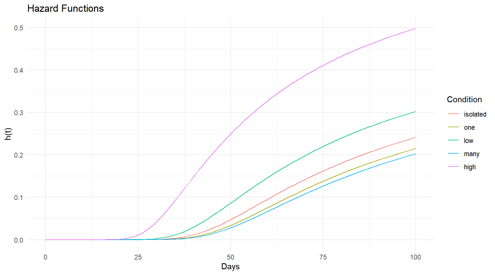
d <- expand.grid(activity = levels(fruitfly$activity), thorax = c(0.7,0.8,0.9))
d <- summary(m, newdata = d, t = seq(0, 100, length = 100),
type = "hazard", tidy = TRUE)
p <- ggplot(d, aes(x = time, y = est, color = activity)) +
geom_line() + theme_minimal() +
labs(x = "Days", y = "h(t)", color = "Condition", title = "Hazard Functions") +
facet_wrap(~ thorax)
plot(p)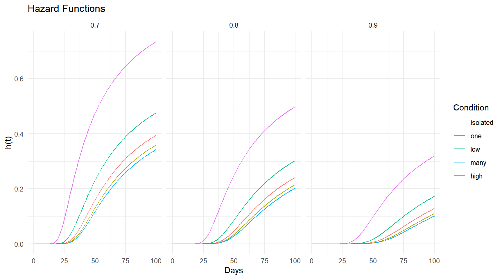 For comparison here are the survival functions.
d <- expand.grid(activity = levels(fruitfly$activity), thorax = c(0.7,0.8,0.9))
d <- summary(m, newdata = d, t = seq(0, 100, length = 100),
type = "survival", tidy = TRUE)
p <- ggplot(d, aes(x = time, y = est, color = activity)) +
geom_line() + theme_minimal() +
labs(x = "Days", y = "S(t)", color = "Condition", title = "Survival Functions") +
facet_wrap(~ thorax)
plot(p)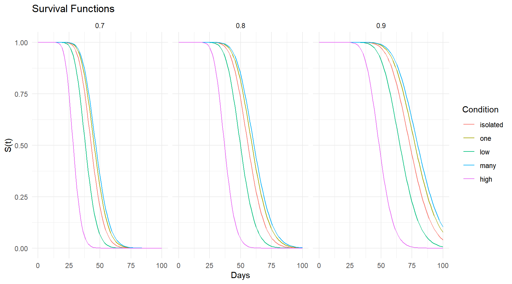 And here are the probability density functions.
d <- expand.grid(activity = levels(fruitfly$activity), thorax = c(0.7,0.8,0.9))
d <- summary(m, newdata = d, t = seq(0, 100, length = 100),
fn = function(t, ...) dgamma(t, ...), tidy = TRUE)
p <- ggplot(d, aes(x = time, y = est, color = activity)) +
geom_line() + theme_minimal() +
labs(x = "Days", y = "f(t)", color = "Condition", title = "Density Functions") +
facet_wrap(~ thorax)
plot(p)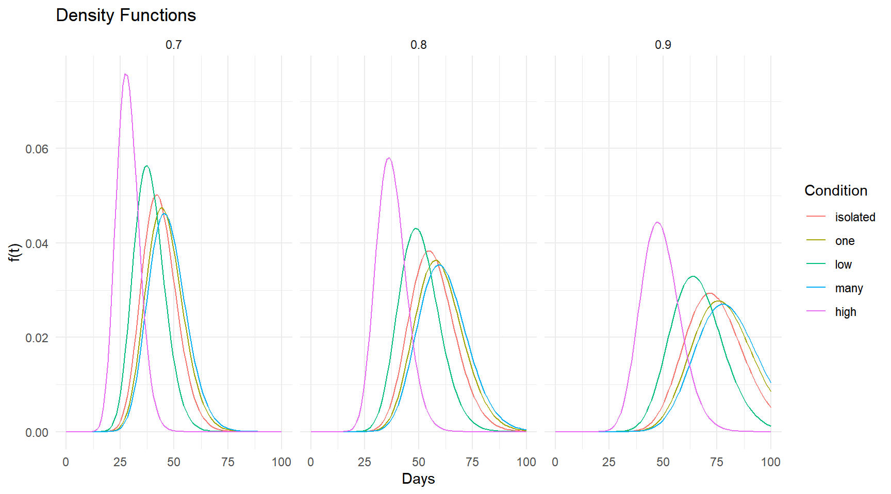
Note that we can adapt this to other distributions by adding a
d to the beginning of the distribution name recognized by
flexsurvreg. This include log-normal (dlnorm),
log-logistic (dllogis), gamma (dgamma),
Weibull (dweibull), exponential (dexp),
Gompertz (dgompertz), generalized gamma
(dgengamma), and generalized F
(dgenf).
Finally we can also plot the expected survival time. This is
analogous to using predict with
type = response in a GLM.
d <- expand.grid(activity = levels(fruitfly$activity),
thorax = seq(0.6, 1.0, length = 100))
d <- summary(m, newdata = d, type = "mean", tidy = TRUE)
head(d) est lcl ucl activity thorax
1 33.11 28.84 37.36 isolated 0.600
2 34.99 31.08 39.52 one 0.600
3 29.47 25.71 33.89 low 0.600
4 35.96 31.85 40.78 many 0.600
5 21.87 19.38 24.81 high 0.600
6 33.47 29.56 37.79 isolated 0.604p <- ggplot(d, aes(x = thorax, y = est, color = activity)) +
geom_line() + theme_minimal() +
labs(x = "Thorax Length (mm)", y = "E(T)", color = "Condition",
title = "Expected Survival Time")
plot(p)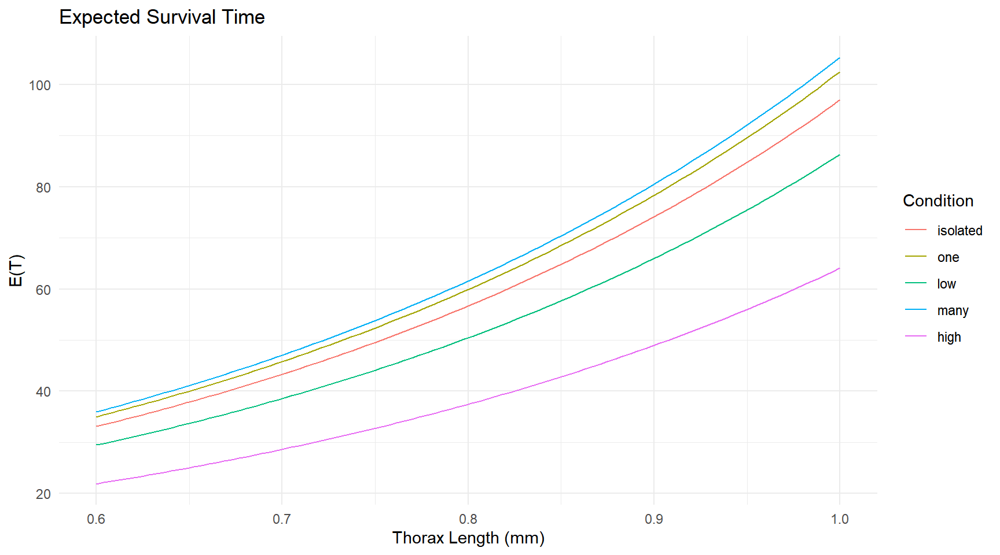
p <- ggplot(fruitfly, aes(x = thorax, y = longevity)) +
geom_point() + facet_wrap(~ activity, ncol = 5) +
labs(x = "Thorax Length (mm)", y = "Longevity (days)",
title = "Observed and Expected Survival Time") +
theme_minimal() + geom_line(aes(y = est), data = d)
plot(p)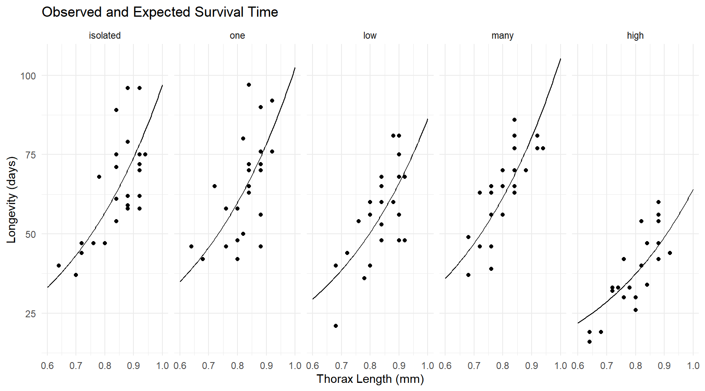
Example: Consider an AFT model for the
leukemia data.
library(survival)
leukemia$status <- factor(leukemia$status, labels = c("alive","dead"))
m <- flexsurvreg(Surv(time, status == "dead") ~ x,
dist = "weibull", data = leukemia)
# create plot of hazard functions
d <- data.frame(x = c("Maintained","Nonmaintained"))
d <- summary(m, newdata = d, t = seq(1, 200, length = 1000),
type = "hazard", tidy = TRUE)
p <- ggplot(d, aes(x = time, y = est)) +
geom_line(aes(linetype = x)) + theme_minimal() +
labs(x = "Time", y = "h(t)", linetype = "Extended",
title = "Hazard Functions") + theme(legend.position = c(0.8, 0.5))
p.h <- p
# create plot of survival functions
d <- data.frame(x = c("Maintained","Nonmaintained"))
d <- summary(m, newdata = d, t = seq(1, 200, length = 1000),
type = "survival", tidy = TRUE)
p <- ggplot(d, aes(x = time, y = est)) +
geom_line(aes(linetype = x)) + theme_minimal() +
labs(x = "Time", y = "S(t)", linetype = "Extended",
title = "Survival Functions") + theme(legend.position = c(0.7, 0.7))
p.s <- p
# create plot of probability density functions
d <- data.frame(x = c("Maintained","Nonmaintained"))
d <- summary(m, newdata = d, t = seq(1, 200, length = 1000),
fn = function(t, ...) dweibull(t, ...), tidy = TRUE)
p <- ggplot(d, aes(x = time, y = est)) +
geom_line(aes(linetype = x)) + theme_minimal() +
labs(x = "Time", y = "f(t)", linetype = "Extended",
title = "Probability Density Functions") +
theme(legend.position = c(0.7, 0.7))
p.d <- p
# put the plots together into one plot
cowplot::plot_grid(p.h, p.s, p.d, ncol = 3)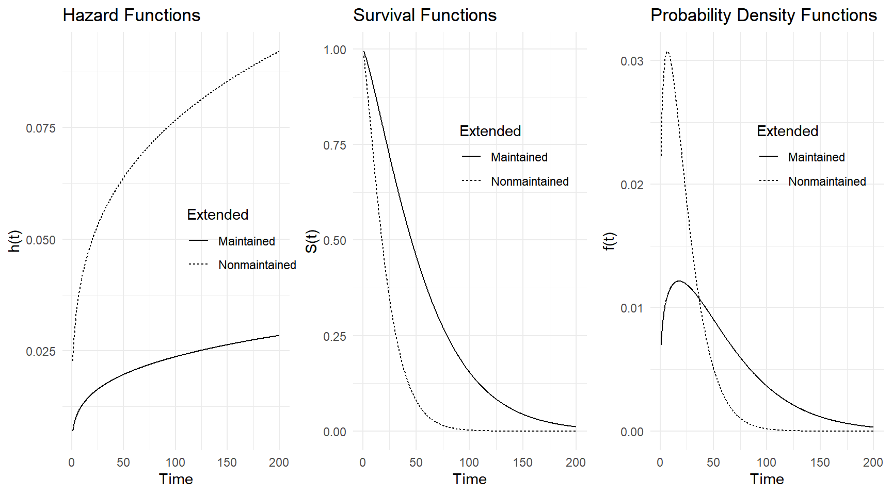 We can also plot the raw data with the estimated expected survival times and confidence intervals for the estimated expected survival time.
d <- summary(m, newdata = data.frame(x = c("Maintained","Nonmaintained")),
type = "mean", tidy = TRUE)
d est lcl ucl x
1 56.57 33.19 104.29 Maintained
2 22.33 13.83 36.65 Nonmaintainedp <- ggplot(leukemia, aes(x = x, y = time)) +
geom_dotplot(aes(fill = status), stackdir = "center", binaxis = "y",
binwidth = 1, dotsize = 2, alpha = 0.5) + coord_flip() +
scale_fill_manual(name = "Status", values = c("white","black")) +
geom_pointrange(aes(y = est, ymin = lcl, ymax = ucl),
shape = 3, data = d) +
labs(x = "Maintained", y = "Remission Time (weeks)") +
theme_classic() + theme(legend.position = c(0.8, 0.8))
plot(p)
A very useful feature of the flexsurv package is that a user can program their own distribution for use with the functions therein.
Proportional Hazards Models
Let \(h_0(t)\) be the “baseline” hazard function (i.e., the hazard function when all \(x_j = 0\)). A proportional hazards model has the form \[ h_i(t) = h_0(t)e^{\beta_1 x_{i1}} e^{\beta_2 x_{i2}} \cdots e^{\beta_k x_{ik}}, \] so that \(h_i(t) \propto e^{\beta_1 x_{i1}} e^{\beta_2 x_{i2}} \cdots e^{\beta_k x_{ik}}\). Thus increasing \(x_j\) by one changes the hazard function by a factor of \(e^{\beta_j}\). This is the hazard ratio. For example, the hazard ratio for \(x_1\) is \[ \frac{h_0(t)e^{\beta_1 (x_1 + 1)} e^{\beta_2 x_2} \cdots e^{\beta_k x_k}}{h_0(t)e^{\beta_1 x_1} e^{\beta_2 x_2} \cdots e^{\beta_k x_k}} = e^{\beta_1}, \] since \(e^{\beta_1 (x_1 + 1)} = e^{\beta_1 x_1}e^{\beta_1}\).
Parametric Proportional Hazards Models
AFT models with a Weibull distribution (or exponential, which is a special case of the Weibull distribution) are also proportional hazards models. Consider the AFT model, \[ \log T_i = \beta_0 + \beta_1 x_{i1} + \beta_2 x_{i2} + \cdots + \beta_k x_{ik} + \sigma\epsilon_i, \] and the proportional hazards model \[ h_i(t) = h_0(t)\exp(\beta_1^* x_{i1} + \beta_2^* x_{i2} + \cdots + \beta_k^* x_{ik}), \] where in both cases \(T_i\) has a Weibull distribution. It can be shown that the models are equivalent with \[ \beta_j^* = -\beta_j/\sigma. \] The hazard ratios are \(e^{\beta_j^*}\).
An AFT model with a Weibull distribution is the only AFT model that is also a proportional hazards model. Other proportional hazards models exist, but none of the them are AFT models.
Example: We can estimate a Weibull proportional
hazards model for the leukemia data using
survreg as follows.
m <- survreg(Surv(time, status == "dead") ~ x, dist = "weibull", data = leukemia)
summary(m)
Call:
survreg(formula = Surv(time, status == "dead") ~ x, data = leukemia,
dist = "weibull")
Value Std. Error z p
(Intercept) 4.109 0.300 13.70 <2e-16
xNonmaintained -0.929 0.383 -2.43 0.015
Log(scale) -0.235 0.178 -1.32 0.188
Scale= 0.791
Weibull distribution
Loglik(model)= -80.5 Loglik(intercept only)= -83.2
Chisq= 5.31 on 1 degrees of freedom, p= 0.021
Number of Newton-Raphson Iterations: 5
n= 23 The estimated hazard ratio is \(e^{\hat\beta_1^*}\) where \(\hat\beta_1^* \approx 0.929/0.791 \approx
1.175\) so \(e^{\hat\beta_1^*} \approx
3.238\). Thus \[
\frac{h_n(t)}{h_y(t)} = e^{\beta_1^*} \Leftrightarrow h_n(t) =
e^{\beta_1^*}h_y(t),
\] where we estimate the hazard ratio \(e^{\beta_1^*}\) to be 3.238. This
conversion can be done using the ConvertWeibull function
from the SurvRegCensCov package.
library(SurvRegCensCov)
ConvertWeibull(m)$vars
Estimate SE
lambda 0.005544 0.005698
gamma 1.264295 0.225328
xNonmaintained 1.174962 0.523035
$HR
HR LB UB
xNonmaintained 3.238 1.162 9.026
$ETR
ETR LB UB
xNonmaintained 0.3948 0.1866 0.8356Another approach is to use dist = "weibullPH" with
flexsurvreg which uses a different parameterization of the
Weibull distribution so that applying the exponential function to the
parameters gives hazard ratios.
m <- flexsurvreg(Surv(time, status == "dead") ~ x, dist = "weibullPH", data = leukemia)
print(m)Call:
flexsurvreg(formula = Surv(time, status == "dead") ~ x, data = leukemia,
dist = "weibullPH")
Estimates:
data mean est L95% U95% se exp(est) L95% U95%
shape NA 1.26430 0.89156 1.79286 0.22532 NA NA NA
scale NA 0.00554 0.00074 0.04156 0.00570 NA NA NA
xNonmaintained 0.52174 1.17496 0.14984 2.20009 0.52303 3.23802 1.16165 9.02580
N = 23, Events: 18, Censored: 5
Total time at risk: 678
Log-likelihood = -80.52, df = 3
AIC = 167The proportionality can be seen when plotting the hazard functions.
d <- data.frame(x = c("Maintained","Nonmaintained"))
d <- summary(m, newdata = d, t = seq(1, 200, length = 1000),
type = "hazard", tidy = TRUE)
p <- ggplot(d, aes(x = time, y = est)) +
geom_line(aes(linetype = x)) + theme_minimal() +
labs(x = "Time", y = "h(t)", linetype = "Extended", title = "Hazard Functions") +
theme(legend.position = c(0.8, 0.5))
plot(p)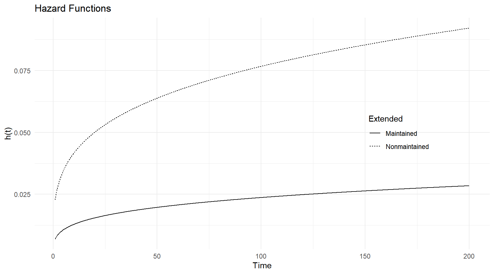
Example: Consider a Weibull proportional hazards
model for the motors data.
m <- flexsurvreg(Surv(time, cens) ~ temp, data = MASS::motors, dist = "weibullPH")
print(m)Call:
flexsurvreg(formula = Surv(time, cens) ~ temp, data = MASS::motors,
dist = "weibullPH")
Estimates:
data mean est L95% U95% se exp(est) L95% U95%
shape NA 2.99e+00 1.97e+00 4.55e+00 6.40e-01 NA NA NA
scale NA 6.34e-22 1.79e-30 2.24e-13 6.37e-21 NA NA NA
temp 1.82e+02 1.36e-01 8.04e-02 1.91e-01 2.81e-02 1.15e+00 1.08e+00 1.21e+00
N = 40, Events: 17, Censored: 23
Total time at risk: 140654
Log-likelihood = -147.4, df = 3
AIC = 300.7Here we have that \[ h_{x+1}(t) = e^{\beta_1^*}h_x{(t)}, \] where \(h_x(t)\) and \(h_{x+1}(t)\) represent the hazard functions at temperatures of \(x\) and \(x+1\), respectively. The estimated hazard ratio is \(e^{\hat\beta_1^*} = 1.15\).
d <- summary(m, newdata = data.frame(temp = seq(110, 150, by = 10)),
t = seq(0, 8000, length = 1000), type = "hazard", tidy = TRUE, ci = FALSE)
p <- ggplot(d, aes(x = time, y = est, color = factor(temp))) +
geom_line() + theme_minimal() + theme(legend.position = c(0.2, 0.6)) +
labs(x = "Hours", y = "h(t)", color = "Temperature", title = "Hazard Functions")
plot(p)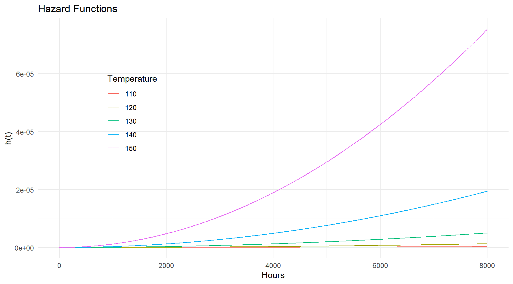